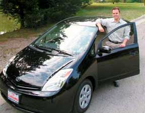

Almost a third of the air pollution in the United States comes frompassenger vehicles. Choosing a greener car can help reduce airpollution and save you money at the gas pump.
Tailpipe emissions, such as nitrogen oxides, volatile organichydrocarbons, carbon monoxide and particulate matter, arebyproducts of engines' combustion process and the evaporation offuel. They create smog and acid rain, and are damaging to bothnatural ecosystems and human health. High levels of air pollutants? especially particulate matter ? are a serious health risk forthose with respiratory problems or heart disease, which is why theEPA closely monitors and reports onlocal air-qualityconditions.
To help you easily judge a car's emissions, the EPA provides airpollution scores for specific models, with zero signaling the mostpollution and 10 the least. Each score reflects a set of limits fortailpipe emissions. When kept properly maintained, the vehicle willemit no more than those limits. The following 2005 models had theleast amount of tailpipe emissions: the Toyota Prius, Ford EscapeHybrid, Saturn Ion, Honda Accord Hybrid and Nissan Sentra. To viewmore scores for the most fuel-efficient vehicles from model years2000 to 2005, check out the October/November 2005 issue ofMother Earth News. For more information, visit theAlternative Transportation Page.
|
 If Batman drove a fuel-efficient car, this would be it ? the Toyota Prius, a gasoline/electric hybrid. The Prius is among the most fuel-efficient and least-polluting vehicles available. |
|
|